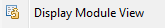

Menu option:

Today there is no dialog for selecting the view that is retrieved. Behind the scene, iSphere checks the module for *LISTING and *TEXT module view. When a *LISTING view is found, that view is returned. Otherwise the first *TEXT view is returned.
| Note: You must be authorized to execute the STRDBG and ENDDBG commands in oder to use this menu option. |